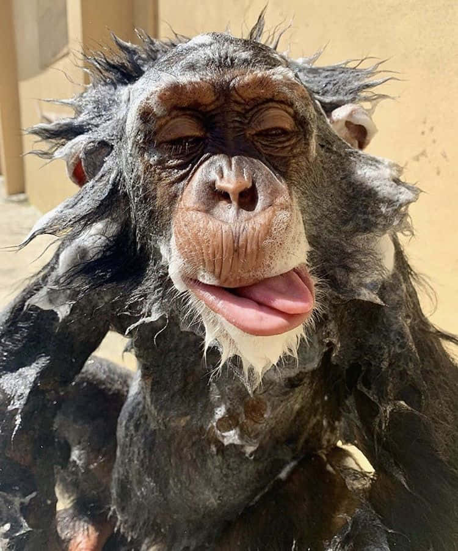

O Brasil é o lar da maior biodiversidade de macacos do mundo, abrigando mais de 130 espécies de primatas, muitos deles so se encontra aqui. Essa rica diversidade se deve em grande parte aos diferentes habitats oferecidos pelo país, incluindo a Amazônia, o Pantanal, o Cerrado e a Mata Atlântica.
Conheça as espécies brasileiras que estão na lista dos primatas mais ameaçados do mundo


obrigada pela atenção!
Júlia T. Rowedder